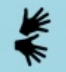
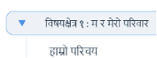
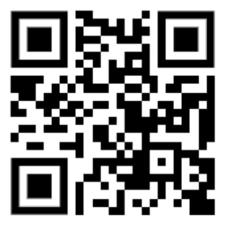

पाठ्यक्रम विकास केन्द्रले युनिसेफसँगको सहकार्यमा कक्षा १ को हाम्रो सेरोफेरो विषयको पहुँचयोग्य डिजिटल सामग्री (ADT) सबै बालबालिका, विशेष गरी अपाङ्गता भएका बालबालिकाको सिकाइ आवश्यकतालाई ध्यानमा राख्दै सिकाइको सर्वव्यापी ढाँचा (UDL) का सिद्धान्तअनुसार पहुँचयोग्य बनाउन अनुकूलित गरेको डिजिटल सामग्री हो । यो डिजिटल सामग्रीमा कक्षा १ को हाम्रो सेरोफेरो विषयका विषयवस्तुलाई अनुकूलन गरी सिकाइ क्रियाकलापलाई सम्भव भएसम्म अन्तरक्रियात्मक बनाइएको छ । यो सामग्री परीक्षणका रूपमा कार्यान्वयन गरी प्राप्त सुझावका आधारमा आवश्यक परिमार्जन गरी कार्यान्वयनका लागि उपलब्ध हुने छ ।
यस डिजिटल सामग्रीको प्रत्येक पृष्ठमा पहुँच योग्यताका विभिन्न सुविधा प्रयोग गर्नका लागि विभिन्न सङ्केत प्रयोग गरिएका छन् जसलाई क्लिक गरेर सो सुविधा सुरु गर्न सकिन्छ ।
| क्र.स. | विशेषता | सङ्केत | प्रयोग |
|---|---|---|---|
| १ | रिड अलाउड (Read aloud) | पाठमा लेखिएका विषयवस्तु सुन्न प्रत्येक पाठको बायाँतिरको रिड अलाउडको सङ्केतमा क्लिक गर्नुपर्छ । यो सुविधालाई बन्द गर्न पुन: सोही सङ्केतमा क्लिक गर्नुपर्छ । यो सक्रिय हुँदा निलो रङको देखिन्छ भने नभएमा कालो देखिन्छ । यसले न्यूनदृष्टि हुने बालबालिकालाई मदत गर्छ । | |
| २ | साङ्केतिक भाषा (Sign Language) |
 |
पाठमा लेखिएका विषयवस्तुलाई साङ्केतिक भाषामा हेर्न र सुन्न प्रत्येक पाठको दायाँतिरको साङ्केतिक भाषाको सङ्केतमा क्लिक गर्नुपर्छ । यो सुविधालाई बन्द गर्न पुन: सोही सङ्केतमा क्लिक गर्नुपर्छ । यो सक्रिय हुँदा निलो रङको देखिन्छ भने नभएमा कालो रङको देखिन्छ । यसले सुनाइसम्बन्धी अपाङ्गता भएका बालबालिकालाई मदत गर्छ । |
| ३ | पछिल्लो पेज (Previous Page) | अध्ययन गरिरहेको पेजबाट पछिल्लो पेजमा जान यो सङ्केतमा क्लिक गर्नुपर्छ । | |
| ४ | अगिल्लो पेज (Next Page) | अध्ययन गरिरहेको पेजबाट अगिल्लो पेजमा जान यो सङ्केतमा क्लिक गर्नुपर्छ । | |
| ५ | शब्दार्थ (Glossary) | पाठमा भएका कठिन शब्दहरूको अर्थ थाहा पाउन यो सङ्केतमा क्लिक गर्नुपर्छ । | |
| ६ | विषयसूची (Table of Contents) |
 |
यो सङ्केतबाट विषयसूचीमा जान सकिन्छ । विषयसूचीबाट सम्बन्धित विषयक्षेत्र र पाठहरूमा सिधै प्रवेश गर्न सकिन्छ । |
यस डिजिटल सामग्रीमा कुनै सल्लाह सुझाव भएमा पाठ्यक्रम विकास केन्द्रको इमेल ठेगाना info@moecdc.gov.np मा पठाउनुहुन अनुरोध छ ।
ADT Link: https://nco-npl.github.io/adt/

पहुँचयोग्य डिजिटल सामग्रीको लिङ्कको QR कोड